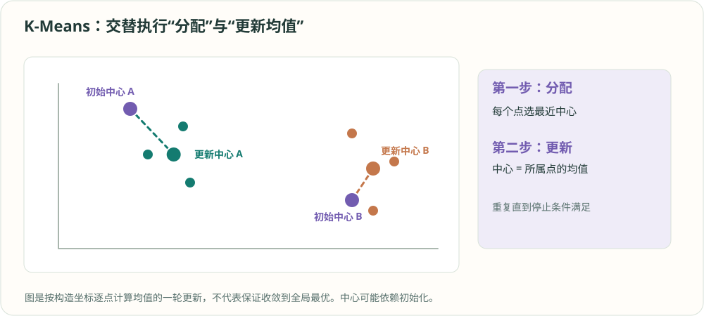
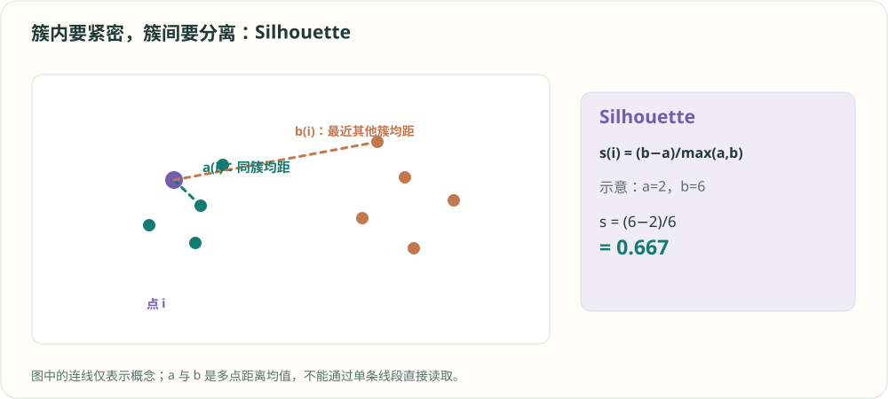
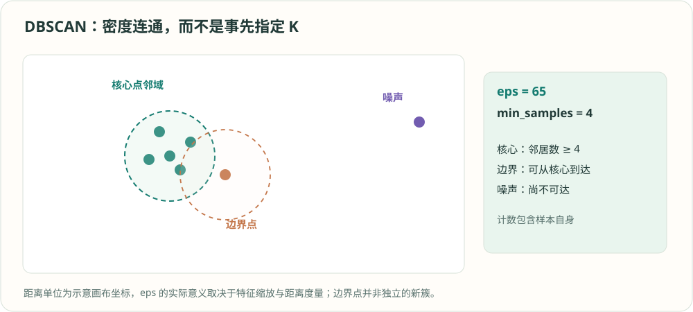

聚类：K-Means、DBSCAN 与层次结构如何发现群组
没有标签时，算法可以按中心距离、局部密度或合并层次组织样本，但“簇”并非客观真相。通过逐次迭代、eps 邻域和轮廓系数理解聚类机制、初始化敏感性与指标局限。
01 · 聚类解决的是哪一类无标签问题
假设有用户行为向量，没有人工标签告诉我们哪些用户属于同一群。聚类可以根据一定的相似性或距离定义，将样本分成有某种内部一致性的组。与监督分类不同，聚类输出的编号本身没有先验的业务含义：模型称为“簇 0”的用户，未必就等于“高价值客户”。
聚类是否有意义取决于特征空间、距离、标准化与数据采集过程。用年龄、购买金额和登录次数拼成向量时，若数值尺度差别很大，欧氏距离可能几乎只反映购买金额。降维后看上去分成几个岛，也不证明在原始变量中真的存在稳定簇。
02 · K-Means 在优化什么
K-Means 要预先指定簇数 K，每个簇以中心向量 μk 表示。它交替执行两步：分配，把每个样本分给距离最近的中心；更新，将中心改为该簇内所有点的平均向量。其目标是最小化所有点到所属中心的平方欧氏距离之和，通常称为 inertia 或 within-cluster sum of squares。
这里 zᵢ 是样本 i 的簇编号，μ_{zᵢ} 是该簇的平均向量。每轮分配与中心更新会令目标不升高，但可能收敛在不同的局部解，因此初始中心与多次重启很重要。k-means++ 是改善初始化的策略，不能保证全局最优。

03 · 选 K：肘部与轮廓不是自动答案
当 K 增大时，inertia 通常不升高，因为可用更多中心拟合点；如果不断增加 K，训练数据甚至可以被逐点记住。因此仅用“inertia 最小”会偏向过大的 K。“肘部法”寻找收益趋缓的位置，却常常没有清晰拐点。
轮廓系数同时考察簇内紧密程度与到最近其他簇的分离程度。对样本 i，a(i) 是同簇其他点的平均距离，b(i) 是它到最邻近其他簇的平均距离，定义 s(i)=(b−a)/max(a,b)。分数范围在 −1 到 1 之间，越接近 1 通常表示当前度量下的分离更明显；但当簇数不在 2 到 n−1 之间时无法按通常定义计算。

轮廓高分更偏爱一些分离良好且形状简单的簇，可能对细长、密度不均或非凸的真实结构作出不合理判断。评价聚类时还应检查稳定性、领域含义、噪声比例和实际决策价值。
04 · DBSCAN：从 eps 邻域得到密度连通结构
DBSCAN 不需要事先指定簇数 K。给定距离半径 eps 与 min_samples，若某点的 eps 邻域内有足够多的点（scikit-learn 默认计数包含自己），它是核心点；在某核心点的邻域中但自身邻居不足的点可以是边界点；无法从任何核心点密度到达的点通常被标为噪声 −1。

eps 不是一个“普适距离”，需要随特征缩放、度量和数据单位选择。DBSCAN 能找到非凸形状并标记部分离群点，但不同局部密度共存时难以用单一 eps 兼顾，稠密与稀疏簇也可能被错误合并或拆分。不同实现对大量样本的内存与近邻查询开销也需考虑。
05 · 层次聚类提供一棵“合并历史”
凝聚层次聚类从每个样本各成一簇开始，逐步合并最接近的两个簇；不同的 linkage 决定了“簇之间的距离”如何定义。single 看最近点，容易出现长链；complete 看最远点，更倾向紧凑簇；average 用跨簇点对的平均距离；Ward 倾向每次使簇内平方误差增量最小，并与欧氏距离有特定匹配约束。
可用树状图（dendrogram）观察合并历史，再按高度或目标簇数截断。但合并顺序并不是客观的类别层级；不同标准化、样本或 linkage 都可能改变树的结构。规模很大时还需考虑两两距离和层次合并成本。
06 · 哪些评价适合“没有标签”的任务
仅拥有无标签数据时可以计算 inertia、silhouette 等内部指标，但它们依赖特征表示与距离假设。若有独立人工标签可用于事后评价，可以使用 adjusted Rand index 或 normalized mutual information 等外部指标；不应先用这些标签反复挑参数，再宣称是真正无监督的外部评价。
存在噪声标签 −1 时，轮廓指标是否将它视作单独簇、排除它还是单独统计噪声比例，需要事先约定。把所有噪声直接当作一个真实簇往往没有合理几何意义。不同运行的簇编号可以置换，评估时不能直接逐样本比较编号是否相等。
07 · 可运行实验：圆团与两月牙为什么产生不同结果
下面分开构造高斯团与双月牙两类人工数据。K-Means 在圆团数据上比较不同 K 的 inertia 和 silhouette；DBSCAN 在月牙数据上产生密度标签，并单独统计噪声数。这里不把内部指标误认为业务准确率。
import numpy as np
from sklearn.datasets import make_blobs, make_moons
from sklearn.cluster import KMeans, DBSCAN, AgglomerativeClustering
from sklearn.preprocessing import StandardScaler
from sklearn.metrics import silhouette_score
X, _ = make_blobs(n_samples=240, centers=3,
cluster_std=0.75, random_state=13)
scaled = StandardScaler().fit_transform(X)
report = {}
for k in (2, 3, 4):
km = KMeans(n_clusters=k, random_state=13, n_init=10)
groups = km.fit_predict(scaled)
report[k] = (float(km.inertia_),
float(silhouette_score(scaled, groups)))
print("KMeans (inertia, silhouette):", report)
assert all(np.isfinite(v) for pair in report.values() for v in pair)
moon, _ = make_moons(n_samples=240, noise=0.06, random_state=13)
moon_scaled = StandardScaler().fit_transform(moon)
db = DBSCAN(eps=0.25, min_samples=5).fit(moon_scaled)
clusters = len(set(db.labels_) - {-1})
noise_count = int(np.sum(db.labels_ == -1))
print("DBSCAN clusters/noise:", clusters, noise_count)
assert db.labels_.shape == (240,)
agg = AgglomerativeClustering(n_clusters=3, linkage="ward")
agg_labels = agg.fit_predict(scaled)
assert len(np.unique(agg_labels)) == 3依赖 Python 3.10+、NumPy、scikit-learn。固定种子使教学数据可复核；这不代表 DBSCAN 在所有月牙噪声参数下都恰好找到两个簇。真实无标签聚类研究需要将度量、样本时间范围、缺失模式和使用目的写入实验记录。
08 · 从聚类结果到业务决策的最后一段距离
新业务分组应由专业人员审查各簇的关键特征、稳定性、噪声与公平性风险；不要因为图上出现两个彩色岛，就把人群贴上身份或价值标签。若使用聚类结果驱动后续自动化决策，还需要在独立时间或人群上评估效果。